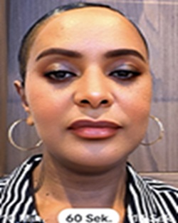
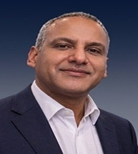
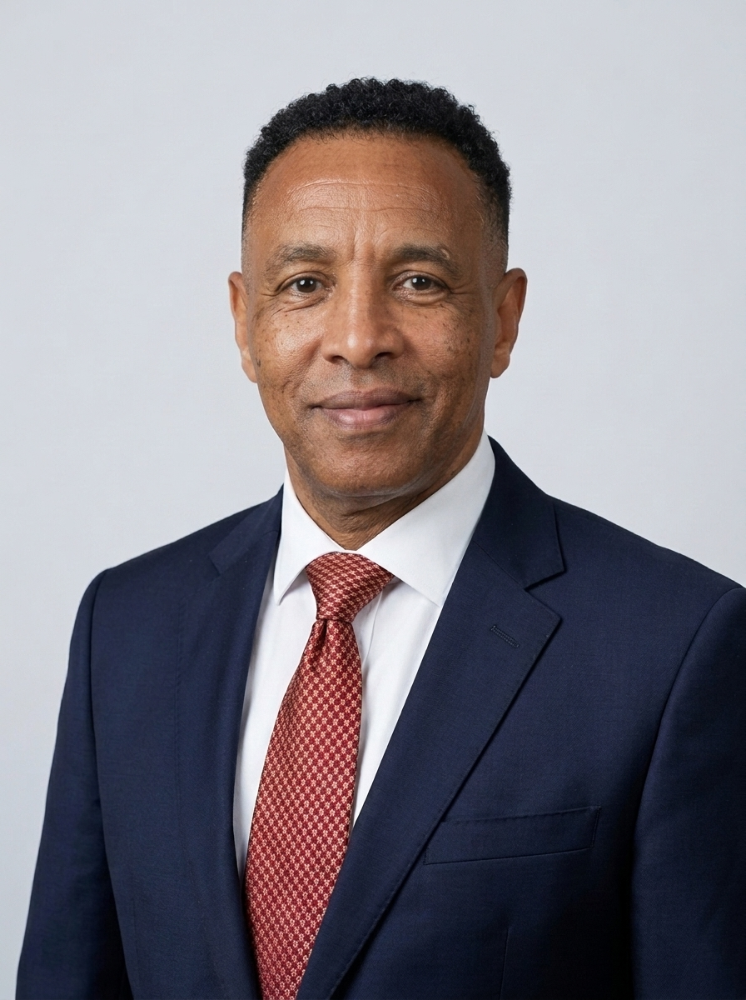

Name 1
1. VorsitzenderLeitet den Verein und vertritt ihn nach außen.
Unser Vorstand setzt sich mit Engagement und Herzblut für die Ziele unseres Vereins ein. Gemeinsam arbeiten wir daran, Bildung, Unterstützung und eine bessere Zukunft zu ermöglichen.
Leitet den Verein und vertritt ihn nach außen.
Unterstützt den Vorsitz und koordiniert die Vereinsarbeit.
Dokumentiert Sitzungen und kümmert sich um administrative Aufgaben.

Betreut Finanzen, Beiträge und eine transparente Kassenübersicht.

Bringt neue Ideen ein und unterstützt die Projekte aktiv.

Engagiert sich für die Umsetzung unserer gemeinsamen Ziele.
Unterstützt die Vorstandsarbeit und gemeinsame Projekte.
Der Kontrollausschuss unterstützt eine transparente und verantwortungsvolle Verwaltung der Vereinsfinanzen.
Prüft die Finanzübersicht und unterstützt die transparente Dokumentation.
Unterstützt die Prüfung von Beiträgen, Ausgaben und Kassenunterlagen.
Wirkt an nachvollziehbaren Prüfberichten und Empfehlungen mit.